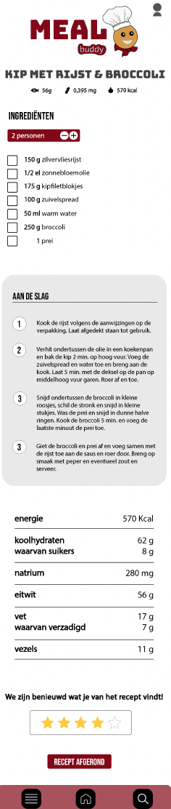
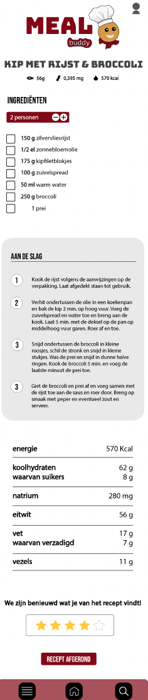

Meal Buddy
Gezond eten kan een uitdaging zijn. Tussen werk, studie en sociale afspraken door is het niet altijd makkelijk om bewuste keuzes te maken. Vaak ontbreekt de tijd om een uitgebalanceerde maaltijd te bedenken, en voordat je het weet, grijp je naar een snelle, ongezonde optie. Meal Buddy is ontwikkeld om die drempel weg te nemen en gezond eten eenvoudiger dan ooit te maken.
Deze slimme app stelt een persoonlijke dagplanning samen, volledig afgestemd op jouw doelen en de ingrediënten die je al in huis hebt. Of je nu wilt afvallen, spiermassa wilt opbouwen of gewoon gevarieerder wilt eten, Meal Buddy helpt je zonder gedoe. Geen ingewikkelde diëten of eindeloos zoeken naar recepten, je krijgt precies te zien wat je vandaag kunt eten, op basis van wat je al hebt.
Wat Meal Buddy écht bijzonder maakt, is het multi-device design. Op je smartphone beheer je jouw eetpatroon en pas je je doelen aan. Op je desktop krijg je een overzichtelijk dashboard met diepgaand inzicht in voedingswaarden. En met je smartwatch ontvang je maaltijdherinneringen of check je snel je boodschappenlijstje terwijl je in de supermarkt staat. Elk apparaat heeft een eigen rol, maar samen maken ze gezond eten moeiteloos en toegankelijk.
Afbeeldingen
 
